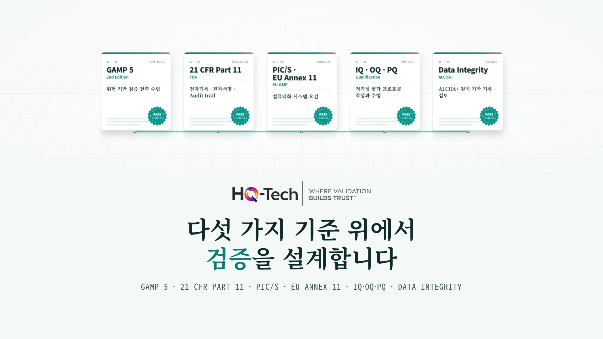

HQ-VMP-001 · Rev.02VMP
APPROVED
검증을 처음 계획할 때
Proof of process, not promises.
검증 문서 한 장 뒤에는, 그 약을 기다리는 환자가 있습니다.
제약·바이오 기업을 위한 컴퓨터 시스템 밸리데이션(CSV·CSA) 컨설팅입니다. FDA, EMA, MHRA, PIC/S 기준에 맞춰 위험 기반 검증을 설계하고, 실사에서 그대로 통하는 문서로 증명합니다.
FDA의 CSA 가이던스, GAMP 5 2nd Edition, EU GMP Annex 11 개정 논의까지. 기준은 계속 바뀌는데 사내 SOP와 템플릿은 몇 년 전 그대로인 경우가 많습니다.
FDA CSA · GAMP 5 (2nd Ed.) · PIC/S잘 돌아가는 시스템도 요구사항, 위험 평가, 테스트 기록이 서로 추적되지 않으면 실사에서 인정받기 어렵습니다. 검증의 결과물은 결국 문서입니다.
21 CFR Part 11 · ALCOA+
수치 출처: 현행 www.hq-tech.co.kr 메인 페이지 게시 내용
GxP 핵심 시스템에 적합한 문서 기반 검증입니다. 요구사항 하나하나가 어떤 테스트로 증명되었는지 실사관이 따라갈 수 있게 만듭니다.
| URS | 요구사항 | FS | 테스트 | 결과 |
|---|---|---|---|---|
| URS-012 | 전자서명 시 사용자 재인증 | FS-3.2 | OQ-07 | PASS |
| URS-015 | Audit trail 변경 전후 값 기록 | FS-4.1 | OQ-09 | PASS |
| URS-021 | 배치 기록 승인 권한 분리 | FS-5.4 | OQ-12 | PASS |
| URS-030 | 야간 배치 처리 성능 | FS-6.1 | PQ-03 | IN REVIEW |
FDA의 Computer Software Assurance 가이던스를 반영합니다. 모든 기능을 같은 무게로 테스트하지 않고, 환자 안전과 제품 품질에 닿는 기능부터 깊게 봅니다.
실사 일정은 잡혔는데 밸리데이션 문서가 버전마다 내용이 다릅니다.
공급사가 준 IQ·OQ 문서를 그대로 써도 되는지 판단이 서지 않습니다.
시스템 업그레이드 때마다 전체 재검증을 해야 하는지 궁금합니다.
Audit trail 검토를 어떤 기록으로 증명해야 할지 막막합니다.
사용자 요구사항 정의부터 최종 승인까지 8단계로 진행합니다. 단계마다 남는 문서가 다음 단계의 근거가 됩니다.
프로젝트 범위, 목표, 접근 방식을 정의하고 문서화합니다.
시스템의 기능 요구사항과 운영 환경을 평가합니다.
GxP 영향도에 따라 시스템을 분류하고 위험을 평가합니다.
공급사의 품질 시스템과 개발 프로세스를 감사합니다.
IQ, OQ, PQ로 시스템이 요구사항을 충족하는지 검증합니다.
모든 활동을 종합하고 최종 승인을 받습니다.
검증 상태를 유지하고 변경 사항을 관리합니다.
네트워크, 보안 등 인프라 요소를 검증합니다.
카테고리에 따라 검증 범위와 테스트 깊이를 달리합니다. SDLC와 Agile 방법론을 함께 적용해 효율과 규제 준수를 같이 챙깁니다. (Category 2는 GAMP 5에서 폐지되었습니다.)

CSV · CSA · DATA INTEGRITY소프트웨어를 직접 만들어 본 엔지니어 출신 컨설턴트가 검증을 설계합니다. 시스템이 어떻게 동작하는지 알기 때문에, 테스트해야 할 것과 덜어내도 되는 것을 구분합니다.
계획부터 종결 보고까지 전체 수명주기를 맡기고 싶을 때
변경관리 절차에 맞춰 영향 범위만 정확히 재검증하고 싶을 때
범위 산정 후 견적표준 템플릿으로 일정 단축
컴퓨터 시스템 밸리데이션(CSV)은 제약·바이오 기업이 GxP 업무에 쓰는 컴퓨터 시스템이 의도한 대로 일관되게 동작한다는 것을 문서화된 증거로 입증하는 활동입니다. 요구사항 정의, 위험 평가, 설치·운영·성능 적격성 평가(IQ·OQ·PQ), 종결 보고까지 시스템 수명주기 전체에 걸쳐 수행합니다. 대표적인 근거 규정은 미국 FDA 21 CFR Part 11과 EU GMP Annex 11입니다.
CSV는 문서 기반의 전통적인 검증 방식으로 ERP, MES, LIMS 같은 GxP 핵심 시스템에 적합합니다. CSA는 FDA 가이던스를 반영한 위험 기반 접근으로, 중·저위험 기능에는 비스크립트 테스트 등 가벼운 방법을 적용해 노력을 핵심 위험에 집중합니다. HQ-Tech는 시스템별로 두 방식을 섞어 설계합니다.
ERP, MES, QMS, DCS, SCADA 같은 생산·품질 시스템, LIMS, ELN, CDS, EDMS 같은 실험실·데이터 시스템, 그리고 네트워크와 데이터베이스 같은 인프라까지 GxP 규제 대상 컴퓨터 시스템 전반을 다룹니다.
공급업체 평가로 품질 시스템이 확인되면 공급사 문서를 근거로 활용해 중복 테스트를 줄일 수 있습니다. 어느 범위까지 인정할지는 위험 평가 결과에 따라 정합니다.
VMP, URS, 위험 평가, IQ·OQ·PQ 프로토콜과 보고서, 추적성 매트릭스, 종결 보고서까지 실사에서 바로 제시할 수 있는 형식으로 드립니다. 다년간 축적한 표준 템플릿을 기반으로 작성합니다.
실사관은 이 문서들을 차례로 넘기며 "무엇을, 어떤 근거로, 어떻게 확인했는지"를 봅니다. HQ-Tech는 표준 템플릿으로 여덟 문서를 서로 추적되게 만듭니다.
검증 범위, 책임자, 접근 방식, 승인 기준에 합의했음을 보여 줍니다.
시스템이 업무와 규제상 해야 할 일을 빠짐없이 정의했음을 보여 줍니다.
어떤 기능을 얼마나 깊게 테스트할지 위험에 근거해 정했음을 보여 줍니다.
승인된 사양대로 설치·구성되었음을 보여 줍니다.
각 기능이 명세대로 동작함을 보여 줍니다.
실제 업무 환경에서 요구사항을 충족함을 보여 줍니다.
모든 요구사항이 테스트로 확인되었음을 한 표로 보여 줍니다.
전체 결과와 일탈 처리를 종합해 운영 사용을 승인합니다.
각 문서의 역할과 GAMP 5 카테고리별 검증 범위는 CSV 가이드에 더 자세히 정리했습니다.
검증은 결국 환자를 지키는 일입니다. 시스템과 일정만 알려 주시면 검증 범위와 접근 방식을 정리해 회신드립니다.
무료 전문가 상담 신청